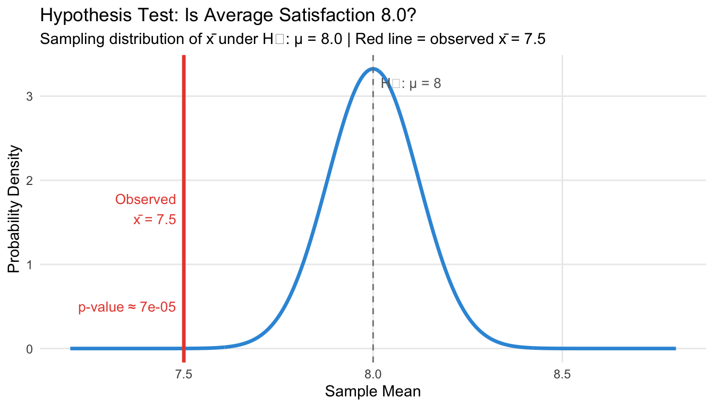
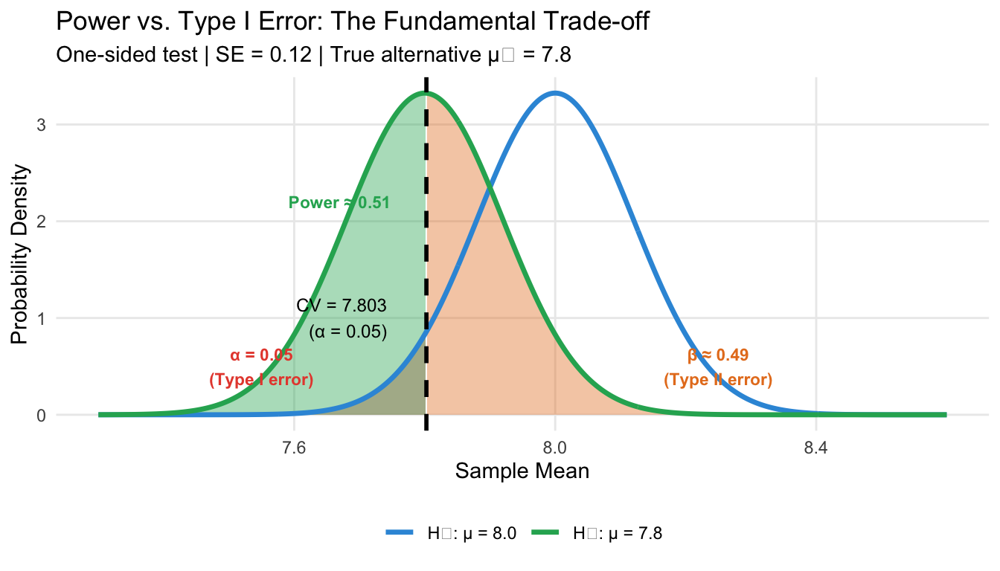
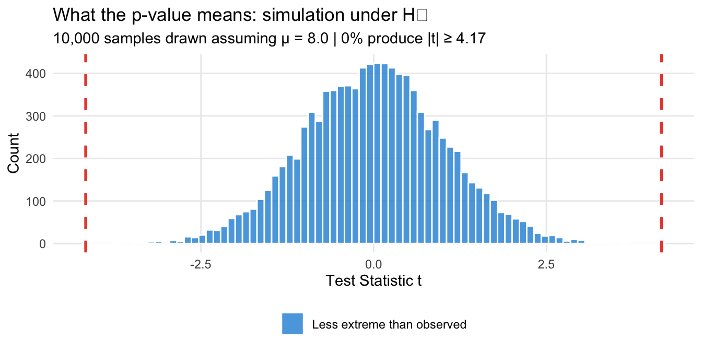
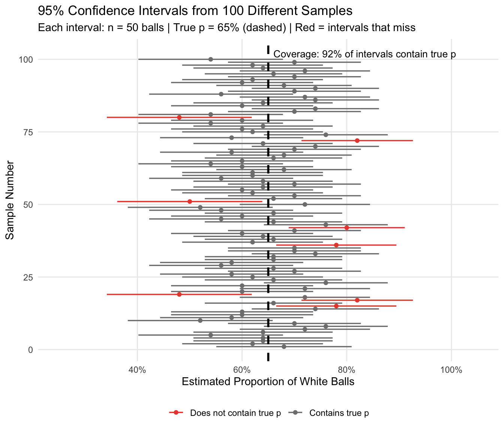
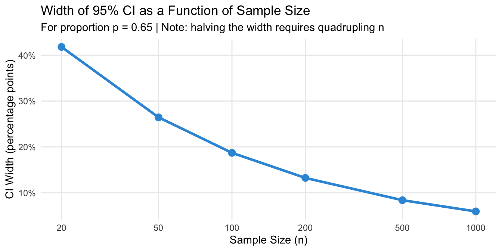

Packages used for R examples
library(ggplot2)
library(dplyr)
library(tidyr)
library(ggpubr)Claudius Gräbner-Radkowitsch
June 15, 2026
June 15, 2026
This page is the last entry in the Statistics Recap track.
Previous resource: Sampling and Statistical Inference
The previous ressource on Sampling and Statistical Inference introduced some essential tools for statistical inference: sampling distributions, standard error, and the Central Limit Theorem. In this resource we look on how we can use these tools to quantify the uncertainty associate with the estimates we produce when doing statistical inference.
There are two types of questions that arise naturally whenever we work with sample data:
Question 1 — Evaluating a claim: A company claims that 60% of the balls in your ball pit are white. You draw a sample of 50 and find 70% white. Is the company’s claim plausible, or is your sample evidence against it? This is the territory of hypothesis testing.
Question 2 — Constructing a range: You surveyed 200 customers and found an average spending of €250. You know this is just a sample — the true average for all your customers could be higher or lower. What is a plausible range for that true value? This is the territory of confidence intervals.
Both questions rest on exactly the same foundation: under fairly general conditions, the CLT guarantees that our sample statistic is approximately normally distributed around the true population parameter, with spread equal to the standard error. This fact helps us to conduct hypothesis tests and compute confidence intervals.
Hypothesis testing is a formal procedure for deciding whether observed data are consistent with a specific claim about the population.
In this context, the claim we want to evaluate is called the null hypothesis \(H_0\). It often states “nothing interesting is happening” or asserts a specific value for the population parameter. The alternative hypothesis \(H_1\) states what we would conclude if the null was wrong.
The key question is: if \(H_0\) were true, how likely would we be to observe a result at least as extreme as what we actually observed?. This probability is the p-value. A small p-value means our observed data would be very unusual under \(H_0\) — which we can take as evidence against \(H_0\). If, on the other hand, we have a high p-value that means that the data we observe was very likely when the \(H_0\) would be true - so it is treated as evidence against rejecting \(H_0\).
A company claims its product achieves an average customer satisfaction of 8.0 out of 10. To test whether this claim is plausible, you survey 100 randomly selected customers and find:
Should you treat this result as evidence for or against the company’s claim?
Step 1: State the hypotheses.
In a first step we need to state our hypotheses explicitly. Often this naturally follows from our research question. In the present case, \(H_0\) corresponds to the claim of the company:
\[H_0: \mu = 8.0 \quad \text{(company's claim)}\] The alternative would be that the claim of the company was wrong:
\[H_1: \mu \neq 8.0 \quad \text{(two-sided: could be higher or lower)}\]
Here we speak of a two-sided alternative as the claim could be wrong in two ways: the true satisfaction could be smaller or larger. You do not need to formulate your hypothesis using equalities only. You could, for instance, also check \(H_0: \mu > 8.0\). Then \(H_1\) would naturally follow as \(H_1: \mu \leq 8.0\).
Step 2: Compute the standard error and test statistic.
By the CLT, the sample mean \(\bar{x}\) follows a normal distribution centred at the true \(\mu\) with standard error \(SE = s/\sqrt{n}\):
\[SE = \frac{1.2}{\sqrt{100}} = 0.12\]
The test statistic measures how many standard errors our observed mean is from the null hypothesis value:
\[t = \frac{\bar{x} - \mu_0}{SE} = \frac{7.5 - 8.0}{0.12} = \frac{-0.5}{0.12} \approx -4.17\]
Step 3: Compute the p-value.
The p-value is the probability of observing a test statistic at least as extreme as \(-4.17\) (in either direction) if \(H_0\) was true.
# Sample data (summarised)
n <- 100
x_bar <- 7.5
s <- 1.2
mu_0 <- 8.0
# Standard error and test statistic
se <- s / sqrt(n)
t_stat <- (x_bar - mu_0) / se
# p-value (two-tailed, using t-distribution with df = n - 1)
p_val <- 2 * pt(abs(t_stat), df = n - 1, lower.tail = FALSE)
cat("Test statistic t =", round(t_stat, 3), "\n")Test statistic t = -4.167 p-value = 6.6e-05
One Sample t-test
data: scores
t = -3.689, df = 99, p-value = 0.0003681
alternative hypothesis: true mean is not equal to 8
95 percent confidence interval:
7.291064 7.786971
sample estimates:
mean of x
7.539018 This p-value is tiny: it says that if \(H_0\) was true, the probability to get the sample we got is essentially zero per cent. Since we got this sample, this is considered strong evidence against \(H_0\) and, therefore, the company’s claim. For a visualization of this test see Figure 1.
x_range <- seq(7.2, 8.8, length.out = 500)
df_curve <- tibble(x = x_range, y = dnorm(x_range, mean = mu_0, sd = se))
crit_val <- qnorm(0.025, mean = mu_0, sd = se) # lower critical value
ggplot(df_curve, aes(x = x, y = y)) +
geom_line(linewidth = 1.2, color = "#3498db") +
geom_area(data = filter(df_curve, x <= mu_0 - abs(x_bar - mu_0)),
fill = "#e74c3c", alpha = 0.4) +
geom_area(data = filter(df_curve, x >= mu_0 + abs(x_bar - mu_0)),
fill = "#e74c3c", alpha = 0.4) +
geom_vline(xintercept = mu_0, linetype = "dashed", color = "gray50") +
geom_vline(xintercept = x_bar, linetype = "solid", color = "#e74c3c", linewidth = 1.2) +
annotate("text", x = mu_0 + 0.02, y = max(df_curve$y) * 0.95,
label = paste0("H₀: μ = ", mu_0), hjust = 0, color = "gray40", size = 3.5) +
annotate("text", x = x_bar - 0.02, y = max(df_curve$y) * 0.5,
label = paste0("Observed\nx̄ = ", x_bar), hjust = 1, color = "#e74c3c", size = 3.5) +
annotate("text", x = 7.35, y = max(df_curve$y) * 0.15,
label = paste0("p-value ≈ ", round(p_val, 5)), color = "#e74c3c", size = 3.5) +
labs(
title = "Hypothesis Test: Is Average Satisfaction 8.0?",
subtitle = "Sampling distribution of x̄ under H₀: μ = 8.0 | Red line = observed x̄ = 7.5",
x = "Sample Mean", y = "Probability Density"
) +
theme_minimal() +
theme(panel.grid.minor = element_blank())
Before seeing the data, researchers choose a significance level \(\alpha\) — typically 0.05 — as the threshold for rejecting \(H_0\). If \(p\text{-value} \leq \alpha\), we reject \(H_0\). If \(p\text{-value} > \alpha\), we fail to reject \(H_0\) (we do not “accept” it — absence of evidence is not evidence of absence).
This decision rule leads to two types of errors:
| \(H_0\) is actually true | \(H_0\) is actually false | |
|---|---|---|
| We reject \(H_0\) | Type I error (false positive, rate = \(\alpha\)) | Correct |
| We fail to reject \(H_0\) | Correct | Type II error (false negative) |
By setting \(\alpha = 0.05\), we accept a 5% probability of incorrectly rejecting a true null hypothesis. Note that this value is a convention. There is no mathematical law that prescribes it and you could, in principle, also choose different values for \(\alpha\). Just keep in mind the associated trade-off between power and the Type I error rate.
The power of a test is the probability of correctly rejecting a false null hypothesis — detecting a real effect when it actually exists. It equals \(1 - P(\text{Type II error}) = 1 - \beta\). When we lower \(\alpha\) (say, from 0.05 to 0.01) to reduce the risk of a false positive, the critical threshold shifts, making it harder to reject \(H_0\) even when \(H_1\) is true — and power falls. Conversely, raising \(\alpha\) increases power but at the cost of more false positives. The only way to reduce both error types simultaneously is to increase the sample size, which narrows the sampling distributions of both \(H_0\) and \(H_1\).
Figure 2 illustrates this trade-off for the customer satisfaction example, assuming a realistic alternative of \(\mu_1 = 7.8\) (a real but modest shortfall from the claimed 8.0). Table 1 shows the corresponding numbers for three choices of \(\alpha\).
mu_0 <- 8.0
mu_1 <- 7.8 # assumed true alternative
se_ht <- 0.12 # SE from the example (s=1.2, n=100)
alpha_show <- 0.05
cv <- qnorm(alpha_show, mean = mu_0, sd = se_ht) # one-sided lower critical value
x_seq <- seq(7.3, 8.6, length.out = 600)
df_two <- tibble(
x = x_seq,
h0 = dnorm(x_seq, mu_0, se_ht),
h1 = dnorm(x_seq, mu_1, se_ht)
)
ggplot(df_two, aes(x = x)) +
# α region: left tail of H₀ past CV
geom_area(data = filter(df_two, x <= cv),
aes(y = h0), fill = "#e74c3c", alpha = 0.4) +
# β region: right tail of H₁ past CV (missed detections)
geom_area(data = filter(df_two, x >= cv),
aes(y = h1), fill = "#e67e22", alpha = 0.4) +
# Power region: left tail of H₁ below CV
geom_area(data = filter(df_two, x <= cv),
aes(y = h1), fill = "#27ae60", alpha = 0.4) +
# Distribution curves
geom_line(aes(y = h0, color = "H₀: μ = 8.0"), linewidth = 1.2) +
geom_line(aes(y = h1, color = "H₁: μ = 7.8"), linewidth = 1.2) +
# Critical value
geom_vline(xintercept = cv, linetype = "dashed", linewidth = 1, color = "black") +
# Labels
annotate("text", x = cv - 0.06, y = 1.0,
label = paste0("CV = ", round(cv, 3), "\n(α = ", alpha_show, ")"),
hjust = 1, size = 3.2, color = "black") +
annotate("text", x = 7.55, y = 0.5,
label = paste0("α = ", alpha_show, "\n(Type I error)"),
hjust = 0.5, size = 3, color = "#e74c3c", fontface = "bold") +
annotate("text", x = 8.25, y = 0.5,
label = paste0("β ≈ ", round(1 - pnorm(cv, mu_1, se_ht), 2), "\n(Type II error)"),
hjust = 0.5, size = 3, color = "#e67e22", fontface = "bold") +
annotate("text", x = 7.67, y = 2.2,
label = paste0("Power ≈ ", round(pnorm(cv, mu_1, se_ht), 2)),
hjust = 0.5, size = 3, color = "#27ae60", fontface = "bold") +
scale_color_manual(
values = c("H₀: μ = 8.0" = "#3498db", "H₁: μ = 7.8" = "#27ae60"),
name = NULL) +
labs(
title = "Power vs. Type I Error: The Fundamental Trade-off",
subtitle = paste0("One-sided test | SE = ", se_ht,
" | True alternative μ₁ = ", mu_1),
x = "Sample Mean", y = "Probability Density"
) +
theme_minimal() +
theme(legend.position = "bottom", panel.grid.minor = element_blank())
alphas_tbl <- c(0.10, 0.05, 0.01)
cvs_tbl <- qnorm(alphas_tbl, mean = mu_0, sd = se_ht)
powers_tbl <- pnorm(cvs_tbl, mean = mu_1, sd = se_ht)
power_table <- tibble(
`α (significance level)` = alphas_tbl,
`Critical value` = round(cvs_tbl, 3),
`Power (1 − β)` = round(powers_tbl, 3),
`Type II error rate (β)` = round(1 - powers_tbl, 3)
)
knitr::kable(power_table)| α (significance level) | Critical value | Power (1 − β) | Type II error rate (β) |
|---|---|---|---|
| 0.10 | 7.846 | 0.650 | 0.350 |
| 0.05 | 7.803 | 0.509 | 0.491 |
| 0.01 | 7.721 | 0.255 | 0.745 |
The table confirms the intuition from Figure 2: a stricter \(\alpha\) (0.01 instead of 0.05) reduces false positives but cuts power nearly in half. The choice of \(\alpha\) is therefore not a mechanical decision — it reflects a deliberate judgement about which type of error is more costly in your specific context. And the common value of \(\alpha=0.05\) is exactly that: a more or less deliberate choice that has become a convention.
The p-value is one of the most commonly misunderstood quantities in statistics. Getting it right matters.
What a p-value IS:
The probability of observing a test statistic at least as extreme as the one we computed, assuming the null hypothesis is true.
What a p-value IS NOT:
set.seed(42)
n_sim <- 10000
sim_tstats <- replicate(n_sim, {
sim_sample <- rnorm(n, mean = mu_0, sd = s)
(mean(sim_sample) - mu_0) / (sd(sim_sample) / sqrt(n))
})
sim_p <- mean(abs(sim_tstats) >= abs(t_stat))
ggplot(tibble(t = sim_tstats), aes(x = t)) +
geom_histogram(aes(fill = abs(t) >= abs(t_stat)), bins = 80,
color = "white", alpha = 0.85) +
scale_fill_manual(values = c("FALSE" = "#3498db", "TRUE" = "#e74c3c"),
labels = c("FALSE" = "Less extreme than observed",
"TRUE" = paste0("At least as extreme (", round(sim_p * 100, 3), "%)")),
name = NULL) +
geom_vline(xintercept = c(-abs(t_stat), abs(t_stat)),
linetype = "dashed", color = "#e74c3c", linewidth = 1) +
labs(
title = "What the p-value means: simulation under H₀",
subtitle = paste0("10,000 samples drawn assuming μ = 8.0 | ",
round(sim_p * 100, 3), "% produce |t| ≥ ", round(abs(t_stat), 2)),
x = "Test Statistic t", y = "Count"
) +
theme_minimal() +
theme(legend.position = "bottom", panel.grid.minor = element_blank())
A small p-value tells you that your data are unlikely under the assumption that \(H_0\) is true. It says nothing about whether \(H_0\) is likely to be true in the first place.
At MA/PhD level, two further issues deserve attention.
Statistical vs. practical significance. With large samples, even trivially small differences become statistically significant. A satisfaction score of 7.99 vs. 8.00 might yield p < 0.05 with n = 100,000. Always ask: is the effect large enough to matter? Complement p-values with effect sizes (Cohen’s d, odds ratios) and confidence intervals.
The multiple comparisons problem. If you test 20 hypotheses at α = 0.05, you expect about one false rejection by chance alone. Corrections such as Bonferroni or Benjamini–Hochberg control the family-wise error rate or false discovery rate when testing many hypotheses simultaneously.
A confidence interval (CI) is a range of plausible values for the population parameter, constructed from the sample data. Rather than committing to a single point estimate, a CI gives a plausible range for the true value. By doing so, it also communicates the precision of our estimate: larger CI indicate greater uncertainty and vice versa.
A 95% confidence interval is constructed so that if we repeated the sampling procedure many times, 95% of the resulting intervals would contain the true population parameter.
This is subtler than it sounds — and easy to get wrong (see below).
For large samples, the CLT guarantees that our estimator is approximately normally distributed. A 95% CI for a mean is:
\[\bar{x} \pm z^* \cdot SE\]
where \(z^* = 1.96\) is the 97.5th percentile of the standard normal (so that 95% of the distribution lies between \(-1.96\) and \(+1.96\)), and \(SE = s/\sqrt{n}\).1
Returning to our ball pit: we draw 100 balls and find that 68 are white (\(\hat{p} = 0.68\)). We now want to construct a 95% CI for the true proportion of white balls.
Step 1: Compute the standard error.
The standard error for a proportion is \(SE = \sqrt{\hat{p}(1-\hat{p})/n}\). With our numbers:
\[SE = \sqrt{\frac{0.68 \times 0.32}{100}} = \sqrt{0.002176} \approx 0.0466\]
Step 2: Use the CLT to derive the interval.
By the CLT, \(\hat{p}\) is approximately normally distributed around the true \(p\). This means that in 95% of samples, \(\hat{p}\) will fall within \(\pm 1.96 \cdot SE\) of the true value:
\[P\!\left(p - 1.96 \cdot SE \;\leq\; \hat{p} \;\leq\; p + 1.96 \cdot SE\right) = 0.95\]
Rearranging this inequality — subtracting \(\hat{p}\) from all parts and multiplying by \(-1\) — gives an equivalent statement with \(p\) in the centre:
\[P\!\left(\hat{p} - 1.96 \cdot SE \;\leq\; p \;\leq\; \hat{p} + 1.96 \cdot SE\right) = 0.95\]
This is the confidence interval. The rearrangement is the key step: we flip from “the estimate is within 1.96 SEs of the truth” to “the truth is within 1.96 SEs of the estimate.” This works because the ±1.96 SE relationship is symmetric.
Step 3: Plug in the numbers.
\[\text{Margin of error} = 1.96 \times 0.0466 \approx 0.091\]
\[95\%\text{ CI} = [0.68 - 0.091,\; 0.68 + 0.091] = [0.589,\; 0.771]\]
Point estimate: p̂ = 0.68 Standard error: SE = 0.0466 95% CI: [ 0.589 , 0.771 ]
1-sample proportions test with continuity correction
data: n_white out of n_balls, null probability 0.5
X-squared = 12.25, df = 1, p-value = 0.0004653
alternative hypothesis: true p is not equal to 0.5
95 percent confidence interval:
0.5782080 0.7677615
sample estimates:
p
0.68 Our 95% CI is [0.589, 0.771]. This is the range of values for the true proportion \(p\) that are consistent with what we observed in our sample.
The interval above rests on the CLT: it works well when \(n\) is large enough that \(\hat{p}\) is approximately normal. Two alternatives exist when that assumption is in doubt.
Exact binomial CI. For proportions specifically, R’s binom.test() constructs an interval directly from the binomial distribution, with no normal approximation involved. It is more accurate when \(n\) is small or when \(p\) is close to 0 or 1 (where the normal approximation distorts the tails).
Bootstrap CI. The most general approach: resample your data with replacement many times, compute the statistic on each resample, and use the 2.5th and 97.5th percentiles of that distribution directly as the CI boundaries. No distributional assumption required. In R, the boot package provides a standard implementation, or you can build a simple version yourself using replicate() and sample() — the same tools used for Monte Carlo simulations on the previous page.
Bootstrap CIs are particularly valuable when your statistic is not a mean or proportion (e.g., a median, a correlation, or a regression coefficient in a small sample) and the CLT approximation is unreliable.
You will often here a statement similar to “there is a 95% probability that the true proportion lies in [0.589, 0.771]”. This is wrong! The true proportion is a fixed (though unknown) number — it is either in the interval or it isn’t. Probability does not apply to a fixed value.
The correct statement is: we used a procedure that generates correct intervals 95% of the time. In any specific interval, we cannot say with certainty whether the true value is inside or outside — but we trust our procedure. This is illustrated in Figure 4.
set.seed(99)
true_p <- 0.65
N <- 5000
pop <- sample(c("White", "Grey"), N, replace = TRUE,
prob = c(true_p, 1 - true_p))
n_ci <- 50
n_trials <- 100
ci_results <- bind_rows(lapply(seq_len(n_trials), function(i) {
s <- sample(pop, n_ci, replace = FALSE)
ph <- mean(s == "White")
se_i <- sqrt(ph * (1 - ph) / n_ci)
tibble(
trial = i,
p_hat = ph,
lower = ph - 1.96 * se_i,
upper = ph + 1.96 * se_i,
covers = (ph - 1.96 * se_i <= true_p) & (ph + 1.96 * se_i >= true_p)
)
}))
coverage_pct <- round(mean(ci_results$covers) * 100, 1)
ggplot(ci_results, aes(y = trial, x = p_hat, color = covers)) +
geom_point(size = 1.5) +
geom_errorbarh(aes(xmin = lower, xmax = upper), height = 0, linewidth = 0.6) +
geom_vline(xintercept = true_p, linetype = "dashed", color = "black", linewidth = 1) +
scale_color_manual(values = c("TRUE" = "grey50", "FALSE" = "#e74c3c"),
labels = c("TRUE" = "Contains true p", "FALSE" = "Does not contain true p"),
name = NULL) +
scale_x_continuous(labels = scales::percent_format(), limits = c(0.25, 1.05)) +
annotate("text", x = 0.66, y = n_trials * 1.02,
label = paste0("Coverage: ", coverage_pct, "% of intervals contain true p"),
hjust = 0, size = 3.5) +
labs(
title = "95% Confidence Intervals from 100 Different Samples",
subtitle = paste0("Each interval: n = ", n_ci, " balls | True p = 65% (dashed) | Red = intervals that miss"),
x = "Estimated Proportion of White Balls", y = "Sample Number"
) +
theme_minimal() +
theme(legend.position = "bottom", panel.grid.minor = element_blank())
Wider CIs reflect more uncertainty. Narrower CIs reflect more precision. Figure 5 shows: as the standard error shrinks with larger \(n\), so does the CI width.
ci_width_df <- bind_rows(lapply(c(20, 50, 100, 200, 500, 1000), function(sn) {
ph <- true_p # use known true p for illustration
se_n <- sqrt(ph * (1 - ph) / sn)
tibble(n = sn, width = 2 * 1.96 * se_n)
}))
ggplot(ci_width_df, aes(x = n, y = width)) +
geom_line(color = "#3498db", linewidth = 1.2) +
geom_point(color = "#3498db", size = 3) +
scale_x_log10(breaks = c(20, 50, 100, 200, 500, 1000)) +
scale_y_continuous(labels = scales::percent_format()) +
labs(
title = "Width of 95% CI as a Function of Sample Size",
subtitle = "For proportion p = 0.65 | Note: halving the width requires quadrupling n",
x = "Sample Size (n)", y = "CI Width (percentage points)"
) +
theme_minimal() +
theme(panel.grid.minor = element_blank())
Hypothesis tests and confidence intervals are two sides of the same coin. For a two-sided test at significance level \(\alpha\):
A value \(\mu_0\) is rejected at level \(\alpha\) if and only if \(\mu_0\) lies outside the \((1 - \alpha)\) confidence interval.
In our customer satisfaction example: the 95% CI for \(\mu\) is:
95% CI for mean satisfaction: [ 7.265 , 7.735 ]H₀ value (μ₀ = 8.0) inside the CI? FALSEThe null value 8.0 falls far outside the 95% CI — consistent with the very small p-value we found earlier.
This equivalence is useful: a confidence interval conveys everything a hypothesis test does (whether we reject \(H_0\)) and more (how large the plausible range of values is). This is why many statisticians prefer reporting CIs over p-values alone.
The equivalence between tests and CIs holds exactly only when both use the same distributional assumptions. Some common pitfalls:
| Misconception | Correct statement |
|---|---|
| “p = 0.03 means there is a 3% probability that H₀ is true.” | The p-value is the probability of observing our data (or more extreme), given H₀ is true. It says nothing about the probability H₀ is true. |
| “p > 0.05 means we have shown H₀ is true.” | Failing to reject H₀ only means the data are not inconsistent with H₀. It is not evidence for H₀. |
| “The 95% CI means there is a 95% chance the true value is in this interval.” | The true value is fixed (not random). The 95% refers to the procedure: 95% of such intervals cover the true value. |
| “A statistically significant result is important.” | Statistical significance depends on sample size. With large enough samples, trivially small effects become significant. Always consider effect size alongside the p-value. |
Test your understanding with the companion exercise set: Hypothesis Testing and Confidence Intervals: Practice Exercises
Seven exercises covering CI interpretation, p-value reasoning, statistical vs. practical significance, Type I/II error trade-offs, and step-by-step calculations — with hidden solutions.
This page ends the statistics recap track. The tools covered across all six pages — descriptive statistics, probability theory, and the inferential machinery of sampling distributions, hypothesis tests, and confidence intervals — form the conceptual foundation for applied empirical work. The natural next step is applying these ideas within specific methods: regression analysis, experimental design, or survey methodology, all of which are covered in other sections of the Resource Library.
Track overview: A Recap of Undergraduate Statistics
There are also other ways to construct a CI, which do not rely on the assumption of normally distributed estimators. But their treatment is beyond the scope of this resource.↩︎
@misc{gräbner-radkowitsch2026,
author = {Gräbner-Radkowitsch, Claudius},
editor = {Gräbner-Radkowitsch, Claudius},
title = {Hypothesis {Testing} and {Confidence} {Intervals}},
date = {2026-06-15},
url = {https://euf-methodology-hub.netlify.app/resources/statistics/hypothesis-testing-and-confidence-intervals},
langid = {en}
}
---
title: "Hypothesis Testing and Confidence Intervals"
description: "Applying sampling theory to make inferences: how to evaluate claims using data (hypothesis testing and p-values) and how to construct ranges of plausible values for population parameters (confidence intervals)."
author: "Claudius Gräbner-Radkowitsch"
date: 2026-06-15
date-modified: 2026-06-15
image: ../../assets/images/statistics.png
learning-objectives:
- "Formulate a null and alternative hypothesis for a given research question"
- "Compute and interpret a test statistic and p-value, and explain what a p-value does and does not mean"
- "Construct and interpret a confidence interval for a mean and a proportion"
- "Explain the connection between hypothesis tests and confidence intervals"
- "Avoid the most common misconceptions about p-values and confidence intervals"
categories:
- statistics
- R
- BA
- MA
- reading
level:
- BA
- MA
content-type: reading
citation:
type: entry
container-title: "Methods Hub"
title: "Hypothesis Testing and Confidence Intervals"
editor:
- name: "Claudius Gräbner-Radkowitsch"
url: https://euf-methodology-hub.netlify.app/resources/statistics/hypothesis-testing-and-confidence-intervals
---
::: {.callout-note collapse="true"}
## Part of the Statistics Recap Track
This page is the last entry in the [Statistics Recap track](../../tracks/statistics-recap.qmd).
**Previous resource:** [Sampling and Statistical Inference](sampling-and-inference.qmd)
:::
```{r}
#| code-summary: "Packages used for R examples"
#| message: false
#| warning: false
library(ggplot2)
library(dplyr)
library(tidyr)
library(ggpubr)
```
```{r}
#| include: false
# Pre-compute values referenced in prose before their defining chunks run
n <- 100; x_bar <- 7.5; s <- 1.2; mu_0 <- 8.0
se <- s / sqrt(n)
t_stat <- (x_bar - mu_0) / se
p_val <- 2 * pt(abs(t_stat), df = n - 1, lower.tail = FALSE)
n_balls <- 100; n_white <- 68; p_hat <- n_white / n_balls
z_star <- qnorm(0.975)
se_prop <- sqrt(p_hat * (1 - p_hat) / n_balls)
ci_lower <- p_hat - z_star * se_prop
ci_upper <- p_hat + z_star * se_prop
```
# Two Questions Sampling Theory Can Answer
The previous ressource on [Sampling and Statistical Inference](sampling-and-inference.qmd) introduced some essential tools for statistical inference: sampling distributions, standard error, and the Central Limit Theorem. In this resource we look on how we can use these tools to quantify the uncertainty associate with the estimates we produce when doing statistical inference.
There are two types of questions that arise naturally whenever we work with sample data:
**Question 1 — Evaluating a claim:** A company claims that 60% of the balls in your ball pit are white. You draw a sample of 50 and find 70% white. Is the company's claim plausible, or is your sample evidence against it? This is the territory of **hypothesis testing**.
**Question 2 — Constructing a range:** You surveyed 200 customers and found an average spending of €250. You know this is just a sample — the true average for all your customers could be higher or lower. What is a plausible range for that true value? This is the territory of **confidence intervals**.
Both questions rest on exactly the same foundation: under fairly general conditions, the CLT guarantees that our sample statistic is approximately normally distributed around the true population parameter, with spread equal to the standard error. This fact helps us to conduct hypothesis tests and compute confidence intervals.
# Hypothesis Testing
## The Logic
Hypothesis testing is a formal procedure for deciding whether observed data are consistent with a specific claim about the population.
In this context, the claim we want to evaluate is called the **null hypothesis** $H_0$. It often states "nothing interesting is happening" or asserts a specific value for the population parameter. The **alternative hypothesis** $H_1$ states what we would conclude if the null was wrong.
The key question is: *if $H_0$ were true, how likely would we be to observe a result at least as extreme as what we actually observed?*.
This probability is the **p-value**. A small p-value means our observed data would be very unusual under $H_0$ — which we can take as evidence against $H_0$. If, on the other hand, we have a high p-value that means that the data we observe was very likely when the $H_0$ would be true - so it is treated as evidence against rejecting $H_0$.
## A Worked Example: Customer Satisfaction
A company claims its product achieves an average customer satisfaction of 8.0 out of 10.
To test whether this claim is plausible, you survey 100 randomly selected customers and find:
- Sample mean satisfaction: $\bar{x} = 7.5$
- Sample standard deviation: $s = 1.2$
Should you treat this result as evidence for or against the company's claim?
**Step 1: State the hypotheses.**
In a first step we need to state our hypotheses explicitly.
Often this naturally follows from our research question.
In the present case, $H_0$ corresponds to the claim of the company:
$$H_0: \mu = 8.0 \quad \text{(company's claim)}$$
The alternative would be that the claim of the company was wrong:
$$H_1: \mu \neq 8.0 \quad \text{(two-sided: could be higher or lower)}$$
Here we speak of a two-sided alternative as the claim could be wrong in two ways:
the true satisfaction could be smaller or larger. You do not need to formulate your hypothesis using equalities only.
You could, for instance, also check $H_0: \mu > 8.0$. Then $H_1$ would naturally follow as $H_1: \mu \leq 8.0$.
**Step 2: Compute the standard error and test statistic.**
By the CLT, the sample mean $\bar{x}$ follows a normal distribution centred at the true $\mu$ with standard error $SE = s/\sqrt{n}$:
$$SE = \frac{1.2}{\sqrt{100}} = 0.12$$
The **test statistic** measures how many standard errors our observed mean is from the null hypothesis value:
$$t = \frac{\bar{x} - \mu_0}{SE} = \frac{7.5 - 8.0}{0.12} = \frac{-0.5}{0.12} \approx -4.17$$
**Step 3: Compute the p-value.**
The p-value is the probability of observing a test statistic at least as extreme as $`r round(t_stat, 2)`$ (in either direction) if $H_0$ was true.
```{r}
#| code-summary: "Manual hypothesis test and R's t.test()"
# Sample data (summarised)
n <- 100
x_bar <- 7.5
s <- 1.2
mu_0 <- 8.0
# Standard error and test statistic
se <- s / sqrt(n)
t_stat <- (x_bar - mu_0) / se
# p-value (two-tailed, using t-distribution with df = n - 1)
p_val <- 2 * pt(abs(t_stat), df = n - 1, lower.tail = FALSE)
cat("Test statistic t =", round(t_stat, 3), "\n")
cat("p-value =", round(p_val, 6), "\n")
# R's built-in t.test() gives the same result
# (requires the raw data; here we use a simulation to illustrate)
set.seed(42)
scores <- rnorm(n, mean = x_bar, sd = s) # simulated sample matching our summary stats
t_test <- t.test(scores, mu = mu_0, alternative = "two.sided")
t_test
```
This p-value is tiny: it says that if $H_0$ was true, the probability to get the sample we got is essentially zero per cent.
Since we got this sample, this is considered strong evidence against $H_0$ and, therefore, the company's claim.
For a visualization of this test see @fig-ht.
```{r}
#| code-summary: "Visualizing the hypothesis test"
#| label: fig-ht
#| fig-cap: "The hypothesis test. The normal curve shows the sampling distribution of the sample mean **if** the null hypothesis were true (μ₀ = 8.0). Our observed mean of 7.5 falls 4.17 standard errors from the null — in the extreme left tail. The red shaded areas show the p-value: the probability of observing a result this extreme or more extreme under H₀."
#| fig-height: 4
x_range <- seq(7.2, 8.8, length.out = 500)
df_curve <- tibble(x = x_range, y = dnorm(x_range, mean = mu_0, sd = se))
crit_val <- qnorm(0.025, mean = mu_0, sd = se) # lower critical value
ggplot(df_curve, aes(x = x, y = y)) +
geom_line(linewidth = 1.2, color = "#3498db") +
geom_area(data = filter(df_curve, x <= mu_0 - abs(x_bar - mu_0)),
fill = "#e74c3c", alpha = 0.4) +
geom_area(data = filter(df_curve, x >= mu_0 + abs(x_bar - mu_0)),
fill = "#e74c3c", alpha = 0.4) +
geom_vline(xintercept = mu_0, linetype = "dashed", color = "gray50") +
geom_vline(xintercept = x_bar, linetype = "solid", color = "#e74c3c", linewidth = 1.2) +
annotate("text", x = mu_0 + 0.02, y = max(df_curve$y) * 0.95,
label = paste0("H₀: μ = ", mu_0), hjust = 0, color = "gray40", size = 3.5) +
annotate("text", x = x_bar - 0.02, y = max(df_curve$y) * 0.5,
label = paste0("Observed\nx̄ = ", x_bar), hjust = 1, color = "#e74c3c", size = 3.5) +
annotate("text", x = 7.35, y = max(df_curve$y) * 0.15,
label = paste0("p-value ≈ ", round(p_val, 5)), color = "#e74c3c", size = 3.5) +
labs(
title = "Hypothesis Test: Is Average Satisfaction 8.0?",
subtitle = "Sampling distribution of x̄ under H₀: μ = 8.0 | Red line = observed x̄ = 7.5",
x = "Sample Mean", y = "Probability Density"
) +
theme_minimal() +
theme(panel.grid.minor = element_blank())
```
## The Decision Rule
Before seeing the data, researchers choose a **significance level** $\alpha$ — typically 0.05 — as the threshold for rejecting $H_0$. If $p\text{-value} \leq \alpha$, we reject $H_0$. If $p\text{-value} > \alpha$, we fail to reject $H_0$ (we do not "accept" it — absence of evidence is not evidence of absence).
This decision rule leads to two types of errors:
| | $H_0$ is actually true | $H_0$ is actually false |
|---|---|---|
| We reject $H_0$ | **Type I error** (false positive, rate = $\alpha$) | Correct |
| We fail to reject $H_0$ | Correct | **Type II error** (false negative) |
By setting $\alpha = 0.05$, we accept a 5% probability of incorrectly rejecting a true null hypothesis.
Note that this value is a _convention_. There is no mathematical law that prescribes it and you could, in principle, also choose different values for $\alpha$. Just keep in mind the associated trade-off between power and the Type I error rate.
The **power** of a test is the probability of correctly rejecting a false null hypothesis — detecting a real effect when it actually exists. It equals $1 - P(\text{Type II error}) = 1 - \beta$. When we lower $\alpha$ (say, from 0.05 to 0.01) to reduce the risk of a false positive, the critical threshold shifts, making it harder to reject $H_0$ even when $H_1$ is true — and power falls. Conversely, raising $\alpha$ increases power but at the cost of more false positives. The only way to reduce both error types simultaneously is to increase the sample size, which narrows the sampling distributions of both $H_0$ and $H_1$.
@fig-power illustrates this trade-off for the customer satisfaction example, assuming a realistic alternative of $\mu_1 = 7.8$ (a real but modest shortfall from the claimed 8.0). @tbl-power shows the corresponding numbers for three choices of $\alpha$.
```{r}
#| code-summary: "Power vs. Type I error trade-off"
#| label: fig-power
#| fig-cap: "The power–α trade-off. The blue curve is the sampling distribution of x̄ under H₀ (μ = 8.0); the green curve shows the distribution under a plausible true alternative (μ₁ = 7.8). The dashed vertical line is the critical value for α = 0.05. The red area is α (rejecting a true H₀); the orange area is β (failing to reject when H₁ is true); the green area is power (correctly rejecting H₀). Moving the critical value left reduces α but shrinks the green area — power falls."
#| fig-height: 4
mu_0 <- 8.0
mu_1 <- 7.8 # assumed true alternative
se_ht <- 0.12 # SE from the example (s=1.2, n=100)
alpha_show <- 0.05
cv <- qnorm(alpha_show, mean = mu_0, sd = se_ht) # one-sided lower critical value
x_seq <- seq(7.3, 8.6, length.out = 600)
df_two <- tibble(
x = x_seq,
h0 = dnorm(x_seq, mu_0, se_ht),
h1 = dnorm(x_seq, mu_1, se_ht)
)
ggplot(df_two, aes(x = x)) +
# α region: left tail of H₀ past CV
geom_area(data = filter(df_two, x <= cv),
aes(y = h0), fill = "#e74c3c", alpha = 0.4) +
# β region: right tail of H₁ past CV (missed detections)
geom_area(data = filter(df_two, x >= cv),
aes(y = h1), fill = "#e67e22", alpha = 0.4) +
# Power region: left tail of H₁ below CV
geom_area(data = filter(df_two, x <= cv),
aes(y = h1), fill = "#27ae60", alpha = 0.4) +
# Distribution curves
geom_line(aes(y = h0, color = "H₀: μ = 8.0"), linewidth = 1.2) +
geom_line(aes(y = h1, color = "H₁: μ = 7.8"), linewidth = 1.2) +
# Critical value
geom_vline(xintercept = cv, linetype = "dashed", linewidth = 1, color = "black") +
# Labels
annotate("text", x = cv - 0.06, y = 1.0,
label = paste0("CV = ", round(cv, 3), "\n(α = ", alpha_show, ")"),
hjust = 1, size = 3.2, color = "black") +
annotate("text", x = 7.55, y = 0.5,
label = paste0("α = ", alpha_show, "\n(Type I error)"),
hjust = 0.5, size = 3, color = "#e74c3c", fontface = "bold") +
annotate("text", x = 8.25, y = 0.5,
label = paste0("β ≈ ", round(1 - pnorm(cv, mu_1, se_ht), 2), "\n(Type II error)"),
hjust = 0.5, size = 3, color = "#e67e22", fontface = "bold") +
annotate("text", x = 7.67, y = 2.2,
label = paste0("Power ≈ ", round(pnorm(cv, mu_1, se_ht), 2)),
hjust = 0.5, size = 3, color = "#27ae60", fontface = "bold") +
scale_color_manual(
values = c("H₀: μ = 8.0" = "#3498db", "H₁: μ = 7.8" = "#27ae60"),
name = NULL) +
labs(
title = "Power vs. Type I Error: The Fundamental Trade-off",
subtitle = paste0("One-sided test | SE = ", se_ht,
" | True alternative μ₁ = ", mu_1),
x = "Sample Mean", y = "Probability Density"
) +
theme_minimal() +
theme(legend.position = "bottom", panel.grid.minor = element_blank())
```
```{r}
#| label: tbl-power
#| tbl-cap: "How the choice of α determines the trade-off between Type I error rate and power, for a one-sided test with SE = 0.12 and a true alternative of μ₁ = 7.8."
#| code-summary: "Power table for different α levels"
alphas_tbl <- c(0.10, 0.05, 0.01)
cvs_tbl <- qnorm(alphas_tbl, mean = mu_0, sd = se_ht)
powers_tbl <- pnorm(cvs_tbl, mean = mu_1, sd = se_ht)
power_table <- tibble(
`α (significance level)` = alphas_tbl,
`Critical value` = round(cvs_tbl, 3),
`Power (1 − β)` = round(powers_tbl, 3),
`Type II error rate (β)` = round(1 - powers_tbl, 3)
)
knitr::kable(power_table)
```
The table confirms the intuition from @fig-power: a stricter $\alpha$ (0.01 instead of 0.05) reduces false positives but cuts power nearly in half. The choice of $\alpha$ is therefore not a mechanical decision — it reflects a deliberate judgement about which type of error is more costly in your specific context. And the common value of $\alpha=0.05$ is exactly that: a more or less deliberate choice that has become a convention.
# Understanding p-values
The p-value is one of the most commonly misunderstood quantities in statistics. Getting it right matters.
**What a p-value IS:**
> The probability of observing a test statistic at least as extreme as the one we computed, *assuming the null hypothesis is true*.
**What a p-value IS NOT:**
- ✗ The probability that $H_0$ is true
- ✗ The probability that we made a mistake
- ✗ A measure of the size or practical importance of an effect
- ✗ Evidence that the alternative hypothesis is true
```{r}
#| code-summary: "Demonstrating what a p-value is via simulation"
#| label: fig-pval-sim
#| fig-cap: "Simulating what the p-value means. We draw 10,000 samples from a population where H₀ is true (μ = 8.0), compute the test statistic for each, and record the proportion that are at least as extreme as our observed t = -4.17. That proportion is the p-value."
#| fig-height: 3.5
set.seed(42)
n_sim <- 10000
sim_tstats <- replicate(n_sim, {
sim_sample <- rnorm(n, mean = mu_0, sd = s)
(mean(sim_sample) - mu_0) / (sd(sim_sample) / sqrt(n))
})
sim_p <- mean(abs(sim_tstats) >= abs(t_stat))
ggplot(tibble(t = sim_tstats), aes(x = t)) +
geom_histogram(aes(fill = abs(t) >= abs(t_stat)), bins = 80,
color = "white", alpha = 0.85) +
scale_fill_manual(values = c("FALSE" = "#3498db", "TRUE" = "#e74c3c"),
labels = c("FALSE" = "Less extreme than observed",
"TRUE" = paste0("At least as extreme (", round(sim_p * 100, 3), "%)")),
name = NULL) +
geom_vline(xintercept = c(-abs(t_stat), abs(t_stat)),
linetype = "dashed", color = "#e74c3c", linewidth = 1) +
labs(
title = "What the p-value means: simulation under H₀",
subtitle = paste0("10,000 samples drawn assuming μ = 8.0 | ",
round(sim_p * 100, 3), "% produce |t| ≥ ", round(abs(t_stat), 2)),
x = "Test Statistic t", y = "Count"
) +
theme_minimal() +
theme(legend.position = "bottom", panel.grid.minor = element_blank())
```
A small p-value tells you that your data are unlikely *under the assumption that $H_0$ is true*. It says nothing about whether $H_0$ is likely to be true in the first place.
::: {.callout-note .level-advanced}
## MA / PhD
At MA/PhD level, two further issues deserve attention.
**Statistical vs. practical significance.** With large samples, even trivially small differences become statistically significant. A satisfaction score of 7.99 vs. 8.00 might yield p < 0.05 with n = 100,000. Always ask: is the effect large enough to matter? Complement p-values with effect sizes (Cohen's d, odds ratios) and confidence intervals.
**The multiple comparisons problem.** If you test 20 hypotheses at α = 0.05, you expect about one false rejection by chance alone. Corrections such as Bonferroni or Benjamini–Hochberg control the family-wise error rate or false discovery rate when testing many hypotheses simultaneously.
:::
# Confidence Intervals
## The Logic
A **confidence interval** (CI) is a range of plausible values for the population parameter, constructed from the sample data. Rather than committing to a single point estimate, a CI gives a plausible range for the true value.
By doing so, it also communicates the *precision* of our estimate: larger CI indicate greater uncertainty and vice versa.
A 95% confidence interval is constructed so that **if we repeated the sampling procedure many times, 95% of the resulting intervals would contain the true population parameter.**
This is subtler than it sounds — and easy to get wrong (see below).
## Constructing a Confidence Interval
For large samples, the CLT guarantees that our estimator is approximately normally distributed. A 95% CI for a mean is:
$$\bar{x} \pm z^* \cdot SE$$
where $z^* = 1.96$ is the 97.5th percentile of the standard normal (so that 95% of the distribution lies between $-1.96$ and $+1.96$), and $SE = s/\sqrt{n}$.^[There are also other ways to construct a CI, which do not rely on the assumption of normally distributed estimators. But their treatment is beyond the scope of this resource.]
## Example: Ball Pit
Returning to our ball pit: we draw 100 balls and find that 68 are white ($\hat{p} = 0.68$). We now want to construct a 95% CI for the true proportion of white balls.
**Step 1: Compute the standard error.**
The standard error for a proportion is $SE = \sqrt{\hat{p}(1-\hat{p})/n}$. With our numbers:
$$SE = \sqrt{\frac{0.68 \times 0.32}{100}} = \sqrt{0.002176} \approx 0.0466$$
**Step 2: Use the CLT to derive the interval.**
By the CLT, $\hat{p}$ is approximately normally distributed around the true $p$. This means that in 95% of samples, $\hat{p}$ will fall within $\pm 1.96 \cdot SE$ of the true value:
$$P\!\left(p - 1.96 \cdot SE \;\leq\; \hat{p} \;\leq\; p + 1.96 \cdot SE\right) = 0.95$$
Rearranging this inequality — subtracting $\hat{p}$ from all parts and multiplying by $-1$ — gives an equivalent statement with $p$ in the centre:
$$P\!\left(\hat{p} - 1.96 \cdot SE \;\leq\; p \;\leq\; \hat{p} + 1.96 \cdot SE\right) = 0.95$$
This is the confidence interval. The rearrangement is the key step: we flip from "the estimate is within 1.96 SEs of the truth" to "the truth is within 1.96 SEs of the estimate." This works because the ±1.96 SE relationship is symmetric.
**Step 3: Plug in the numbers.**
$$\text{Margin of error} = 1.96 \times 0.0466 \approx 0.091$$
$$95\%\text{ CI} = [0.68 - 0.091,\; 0.68 + 0.091] = [0.589,\; 0.771]$$
```{r}
#| code-summary: "Constructing a 95% confidence interval for a proportion"
n_balls <- 100
n_white <- 68
p_hat <- n_white / n_balls
se_prop <- sqrt(p_hat * (1 - p_hat) / n_balls)
z_star <- qnorm(0.975) # = 1.96
ci_lower <- p_hat - z_star * se_prop
ci_upper <- p_hat + z_star * se_prop
cat("Point estimate: p̂ =", p_hat, "\n")
cat("Standard error: SE =", round(se_prop, 4), "\n")
cat("95% CI: [", round(ci_lower, 3), ",", round(ci_upper, 3), "]\n")
# R's built-in function
prop.test(x = n_white, n = n_balls, conf.level = 0.95)
```
Our 95% CI is [`r round(ci_lower, 3)`, `r round(ci_upper, 3)`]. This is the range of values for the true proportion $p$ that are consistent with what we observed in our sample.
::: {.callout-tip}
## CIs without the normality assumption
The interval above rests on the CLT: it works well when $n$ is large enough that $\hat{p}$ is approximately normal. Two alternatives exist when that assumption is in doubt.
**Exact binomial CI.** For proportions specifically, R's `binom.test()` constructs an interval directly from the binomial distribution, with no normal approximation involved. It is more accurate when $n$ is small or when $p$ is close to 0 or 1 (where the normal approximation distorts the tails).
```r
binom.test(x = 68, n = 100, conf.level = 0.95)
```
**Bootstrap CI.** The most general approach: resample your data with replacement many times, compute the statistic on each resample, and use the 2.5th and 97.5th percentiles of that distribution directly as the CI boundaries. No distributional assumption required. In R, the `boot` package provides a standard implementation, or you can build a simple version yourself using `replicate()` and `sample()` — the same tools used for Monte Carlo simulations on the previous page.
Bootstrap CIs are particularly valuable when your statistic is not a mean or proportion (e.g., a median, a correlation, or a regression coefficient in a small sample) and the CLT approximation is unreliable.
:::
## The Correct Interpretation
You will often here a statement similar to "there is a 95% probability that the true proportion lies in [`r round(ci_lower, 3)`, `r round(ci_upper, 3)`]".
This is **wrong**! The true proportion is a fixed (though unknown) number — it is either in the interval or it isn't. Probability does not apply to a fixed value.
The correct statement is: **we used a procedure that generates correct intervals 95% of the time.** In any specific interval, we cannot say with certainty whether the true value is inside or outside — but we trust our procedure.
This is illustrated in @fig-ci-coverage.
```{r}
#| code-summary: "Visualizing 95% confidence: many CIs from the same population"
#| label: fig-ci-coverage
#| fig-cap: "100 confidence intervals, each constructed from a different sample of 50 balls from the same ball pit (true p = 0.65, dashed line). About 95 of the 100 intervals contain the true proportion (grey). The red intervals are the roughly 5% that miss — not because we did anything wrong, but because that is the expected behaviour of a 95% procedure."
#| fig-height: 6
set.seed(99)
true_p <- 0.65
N <- 5000
pop <- sample(c("White", "Grey"), N, replace = TRUE,
prob = c(true_p, 1 - true_p))
n_ci <- 50
n_trials <- 100
ci_results <- bind_rows(lapply(seq_len(n_trials), function(i) {
s <- sample(pop, n_ci, replace = FALSE)
ph <- mean(s == "White")
se_i <- sqrt(ph * (1 - ph) / n_ci)
tibble(
trial = i,
p_hat = ph,
lower = ph - 1.96 * se_i,
upper = ph + 1.96 * se_i,
covers = (ph - 1.96 * se_i <= true_p) & (ph + 1.96 * se_i >= true_p)
)
}))
coverage_pct <- round(mean(ci_results$covers) * 100, 1)
ggplot(ci_results, aes(y = trial, x = p_hat, color = covers)) +
geom_point(size = 1.5) +
geom_errorbarh(aes(xmin = lower, xmax = upper), height = 0, linewidth = 0.6) +
geom_vline(xintercept = true_p, linetype = "dashed", color = "black", linewidth = 1) +
scale_color_manual(values = c("TRUE" = "grey50", "FALSE" = "#e74c3c"),
labels = c("TRUE" = "Contains true p", "FALSE" = "Does not contain true p"),
name = NULL) +
scale_x_continuous(labels = scales::percent_format(), limits = c(0.25, 1.05)) +
annotate("text", x = 0.66, y = n_trials * 1.02,
label = paste0("Coverage: ", coverage_pct, "% of intervals contain true p"),
hjust = 0, size = 3.5) +
labs(
title = "95% Confidence Intervals from 100 Different Samples",
subtitle = paste0("Each interval: n = ", n_ci, " balls | True p = 65% (dashed) | Red = intervals that miss"),
x = "Estimated Proportion of White Balls", y = "Sample Number"
) +
theme_minimal() +
theme(legend.position = "bottom", panel.grid.minor = element_blank())
```
## The Effect of Sample Size on CI Width
Wider CIs reflect more uncertainty. Narrower CIs reflect more precision.
@fig-ci-width shows: as the standard error shrinks with larger $n$, so does the CI width.
```{r}
#| code-summary: "CI width as a function of sample size"
#| label: fig-ci-width
#| fig-cap: "Confidence interval width decreases with sample size, but with diminishing returns. Quadrupling the sample size halves the CI width."
#| fig-height: 3.5
ci_width_df <- bind_rows(lapply(c(20, 50, 100, 200, 500, 1000), function(sn) {
ph <- true_p # use known true p for illustration
se_n <- sqrt(ph * (1 - ph) / sn)
tibble(n = sn, width = 2 * 1.96 * se_n)
}))
ggplot(ci_width_df, aes(x = n, y = width)) +
geom_line(color = "#3498db", linewidth = 1.2) +
geom_point(color = "#3498db", size = 3) +
scale_x_log10(breaks = c(20, 50, 100, 200, 500, 1000)) +
scale_y_continuous(labels = scales::percent_format()) +
labs(
title = "Width of 95% CI as a Function of Sample Size",
subtitle = "For proportion p = 0.65 | Note: halving the width requires quadrupling n",
x = "Sample Size (n)", y = "CI Width (percentage points)"
) +
theme_minimal() +
theme(panel.grid.minor = element_blank())
```
# The Connection Between Hypothesis Tests and Confidence Intervals
Hypothesis tests and confidence intervals are two sides of the same coin. For a two-sided test at significance level $\alpha$:
> **A value $\mu_0$ is rejected at level $\alpha$ if and only if $\mu_0$ lies outside the $(1 - \alpha)$ confidence interval.**
In our customer satisfaction example: the 95% CI for $\mu$ is:
```{r}
#| code-summary: "Customer satisfaction CI"
ci_sat_lower <- x_bar - qnorm(0.975) * se
ci_sat_upper <- x_bar + qnorm(0.975) * se
cat("95% CI for mean satisfaction: [",
round(ci_sat_lower, 3), ",", round(ci_sat_upper, 3), "]\n")
cat("H₀ value (μ₀ = 8.0) inside the CI?", ci_sat_lower <= mu_0 & mu_0 <= ci_sat_upper)
```
The null value 8.0 falls far outside the 95% CI — consistent with the very small p-value we found earlier.
This equivalence is useful: a confidence interval conveys everything a hypothesis test does (whether we reject $H_0$) and more (how large the plausible range of values is). This is why many statisticians prefer reporting CIs over p-values alone.
::: {.callout-note .level-advanced}
## MA / PhD
The equivalence between tests and CIs holds exactly only when both use the same distributional assumptions. Some common pitfalls:
- A 95% CI based on the normal approximation may not be exactly equivalent to a test based on the exact binomial distribution for small samples.
- For non-symmetric CIs (e.g., likelihood ratio CIs), the equivalence still holds but the interval may not be centred on the point estimate.
- Bayesian **credible intervals** look similar to CIs but have a different meaning: a 95% Bayesian credible interval *does* contain the true value with 95% posterior probability, given the prior. This is closer to how most people intuitively interpret CIs — but requires specifying a prior distribution.
:::
# Common Misconceptions Summarised
| Misconception | Correct statement |
|---|---|
| "p = 0.03 means there is a 3% probability that H₀ is true." | The p-value is the probability of observing our data (or more extreme), *given* H₀ is true. It says nothing about the probability H₀ is true. |
| "p > 0.05 means we have shown H₀ is true." | Failing to reject H₀ only means the data are not inconsistent with H₀. It is not evidence *for* H₀. |
| "The 95% CI means there is a 95% chance the true value is in this interval." | The true value is fixed (not random). The 95% refers to the procedure: 95% of such intervals cover the true value. |
| "A statistically significant result is important." | Statistical significance depends on sample size. With large enough samples, trivially small effects become significant. Always consider effect size alongside the p-value. |
::: {.callout-tip}
## Practice exercises
Test your understanding with the companion exercise set:
[Hypothesis Testing and Confidence Intervals: Practice Exercises](hypothesis-testing-exercises.qmd)
Seven exercises covering CI interpretation, p-value reasoning, statistical vs. practical
significance, Type I/II error trade-offs, and step-by-step calculations — with hidden
solutions.
:::
---
**This page ends the statistics recap track.** The tools covered across all six pages — descriptive statistics, probability theory, and the inferential machinery of sampling distributions, hypothesis tests, and confidence intervals — form the conceptual foundation for applied empirical work. The natural next step is applying these ideas within specific methods: regression analysis, experimental design, or survey methodology, all of which are covered in other sections of the [Resource Library](../../resources/index.qmd).
**Track overview:** [A Recap of Undergraduate Statistics](../../tracks/statistics-recap.qmd)
---
# Comments and questions
<script src="https://giscus.app/client.js"
data-repo="graebnerc/research-methodology-hub"
data-repo-id="R_kgDOS7J-4w"
data-category="Comments"
data-category-id="DIC_kwDOS7J-484C_N51"
data-mapping="pathname"
data-strict="0"
data-reactions-enabled="1"
data-emit-metadata="0"
data-input-position="bottom"
data-theme="preferred_color_scheme"
data-lang="en"
crossorigin="anonymous"
async>
</script>
7 Comments and questions